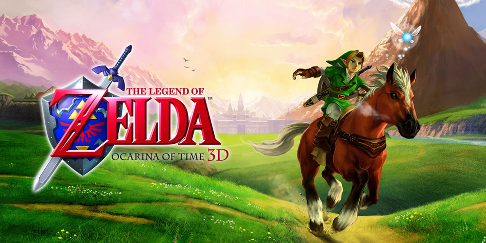
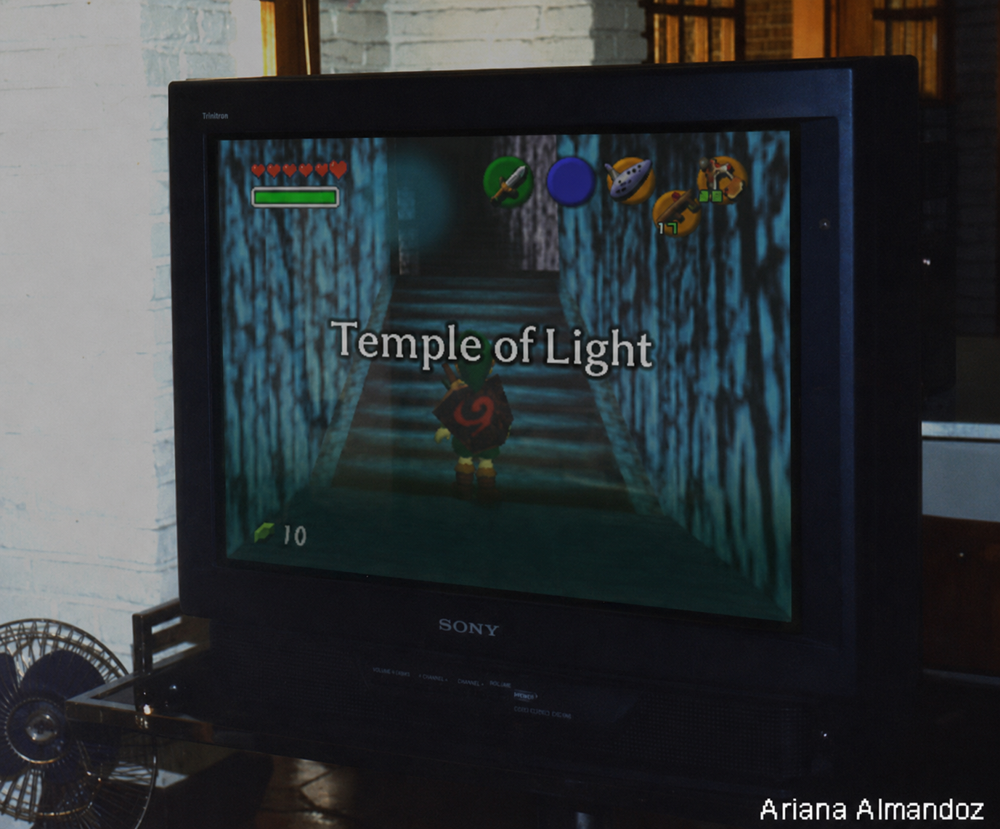
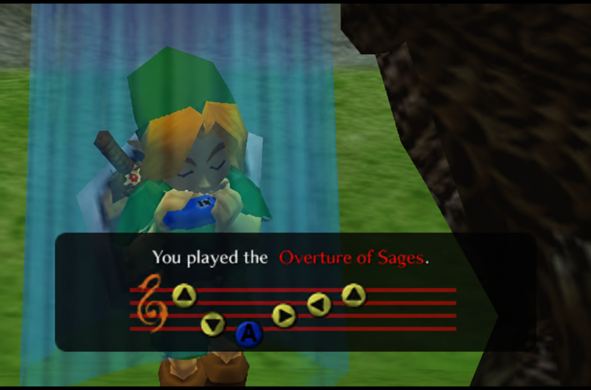
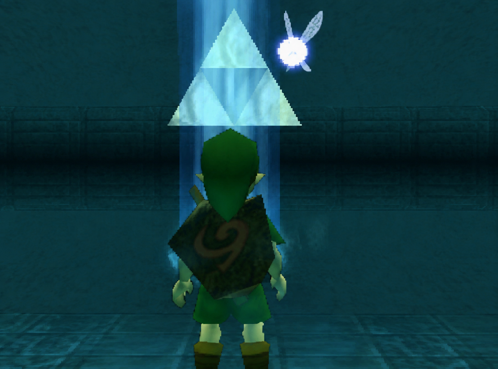

Ainda jogo hoje (emulador)
Project 64 — teclado
Minha Experiência
O meu primeiro contato com Ocarina of Time foi através de um cartucho pirata — cinza, plástico ainda inteiro mas a imagem desbotada. Entrei em um save que não era meu, sem saber absolutamente nada sobre Zelda. Saí da casa do Link em Kokiri Forest e fui recebido por duas Arwings — as naves da Star Fox — disparando lasers vermelhos no meio da floresta. Sem espada, sem escudo, sem a menor ideia do que estava acontecendo, morri diversas vezes tentando entender como passar por elas. Não tinha como. Apaguei o save e comecei um novo. As naves tinham ido embora — e o jogo de verdade começou.
Passei meses dentro desse jogo. Zerei, comecei saves novos, voltei. Entrei nas comunidades do Orkut e mergulhei de cabeça na maior obsessão coletiva que aquele jogo gerou: a busca pela Triforce. O próprio manual do jogo deixava a porta aberta — dizia que ninguém sabia ao certo onde ela estava, que alguns achavam que dormia sob o deserto, outros que estava no cemitério perto da Montanha da Morte. Com isso, a comunidade inteira foi atrás.
Cada canto do jogo virou suspeito. A pirâmide invisível no Haunted Wasteland que só aparecia com a Lens of Truth — e que depois do GameShark revelou ser só um polígono esquecido de uma versão beta. A corrida do Dampé no cemitério, labiríntica o suficiente para parecer esconder algo. O maratonista que sempre te vencia por um segundo, invencível até no GameShark por um bug de programação — e que muitos achavam que se fosse derrotado revelaria algo sobre a Triforce. O Zora's Domain que nunca descongelava, mesmo depois de zerar o jogo, e que a teoria dizia que só voltaria ao normal depois de conseguir a relíquia. Tinha até uma jogadora chamada Ariana que afirmou ter conseguido a Triforce em 1999, enviou fotos da TV, tinha passos detalhados — e Miyamoto chegou a entrar na brincadeira dizendo que não acreditava que as pessoas ainda não tinham descoberto o quão fácil era. Ela foi desmascarada, sumiu, e nunca mais apareceu.
Nada disso funcionou. A Triforce não estava no jogo — o código hackeado depois provou. Mas a impossibilidade dela não tornava a busca menos real. Era uma mitologia construída em cima de um jogo que sabia exatamente o que estava fazendo ao deixar aquele triângulo brilhando no canto da tela sem nunca deixar você tocá-lo.
O cartucho era da versão 1.0 — a mais crua, antes dos ajustes que a Nintendo fez nas versões seguintes. Até hoje não sei onde ele está. O Nintendo 64 parou de funcionar. Mas o jogo continuou: hoje jogo no Project 64, emulador no computador. É visivelmente mais difícil — jogar pelo teclado não chega perto do controle original, cada movimento que antes era instintivo vira um exercício de adaptação. O jogo é o mesmo, a experiência não é.
Fui além do 100% — não no sentido de um contador de itens, mas no sentido de conhecer o jogo fundo a fundo, de ter jogado vezes o suficiente para saber o que vem antes de chegar. No save atual estou a caminho do Templo de Fogo, coletando os heart containers na Montanha da Morte. É um jogo que eu volto. Sempre tem algo que ainda vale fazer de novo.
Existe uma teoria em Twilight Princess de que o Hero's Shade — o espírito dourado que ensina técnicas ao próximo Link — é o mesmo herói daqui, o de Ocarina of Time, que foi enviado de volta à infância no final e nunca pôde transmitir o que sabia. Um herói que o tempo esqueceu, cuja existência só ganha sentido quando encontra alguém capaz de receber o que ele carregava. Cada vez que volto a esse jogo, sinto que estou do lado certo dessa equação — ainda. Não sei até quando.
Registro Visual — A Lenda da Ariana

Temple of Light
Overture of Sages
A TriforceEssas são as imagens que circulavam como prova, na época — a foto da TV com o tal "Temple of Light", a música que mais ninguém conseguia reproduzir, o triângulo finalmente inteiro atrás do Link. Nada disso existia de verdade dentro do jogo. Mas na tela do Orkut, por um tempo, foi o suficiente.
Momentos que Ficaram
- Duas Arwings da Star Fox disparando lasers vermelhos em Kokiri Forest
- "Saria sempre será sua amiga" — a frase que ficou
- As teorias da Triforce nas comunidades do Orkut — impossíveis, mas críveis o suficiente para valer meses de tentativa
- Descobrir anos depois que as naves estão no código original — e que eu as encontrei por acaso
- A teoria do Hero's Shade — que o que fizemos aqui continua em outro jogo, ensinando o próximo herói
Dificuldades
Fui barrado na primeira área do jogo por inimigos que não existem na experiência normal. Sem saber que era um hack, sem saber que havia um jogo inteiro esperando do outro lado daquelas naves, tentei por um bom tempo antes de desistir e apagar tudo.
A minha primeira memória é de algo que não deveria existir dentro dele. A que ficou é de uma amizade que o jogo sabia que ia terminar antes mesmo de você sair da floresta. Ainda estou dentro dele.
Jogado entre 2011 e 2013